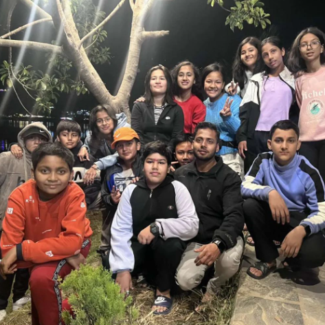

Pokharel is a 12 years old (as of 2022) boy who lives with his parents in Kathmandu Nepal.Aayaan is a very fun liking person who has many different Hobbies.His father's name is Sujan Pokharel and his mother's name is Binju Dahal. He was born in January-4 2010 at Nurbic Hospital Kathmandu.

He currently lives in Pepsicola Kathmandu Nepal.Aayaan has many friends and he studies in Aksharaa School. He is currently at 7th grade and doing decent in his studies.
He has earned many different achievements such as -